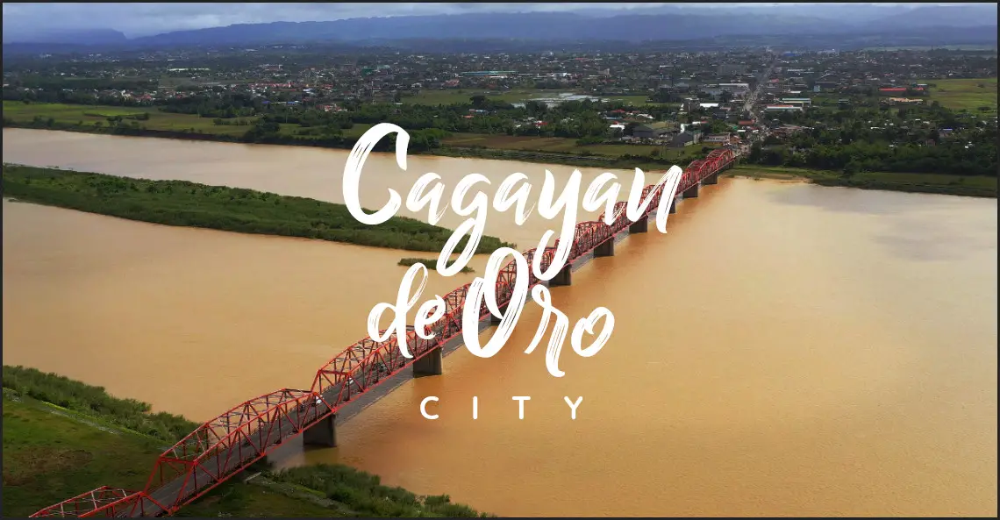
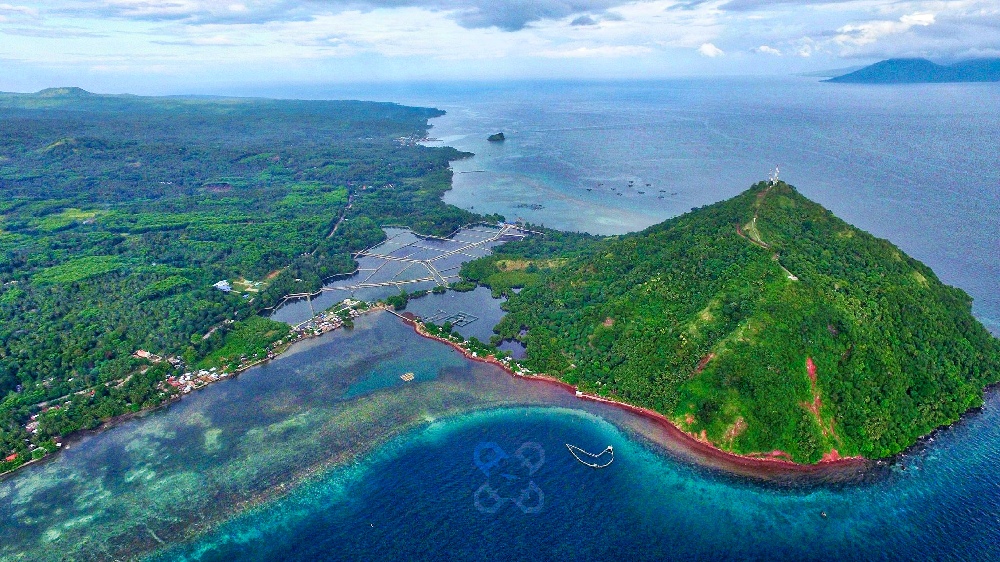

1 / 5

2 / 5
3 / 5

4 / 5

5 / 5

Cagayan de Oro is one of the most popular cities in the southern part of the country. After all, it is the gateway to Northern Mindanao so businesses and tourism are more active than its neighboring towns and city.
It is the capital of the province of Misamis Oriental and part of the Metropolitan Cagayan de Oro along with El Salvador City and the towns of Alubijid, Gitagum, Initao, Laguindingan, Libertad, Lugait, Manticao, Naawan, Opol, Balingasag, Claveria, Jasaan, Tagoloan, and Villanueva.
The city has been nicknamed The City of Golden Friendship, City of Gold, and eventually the Whitewater Rafting Capital of the Philippines.